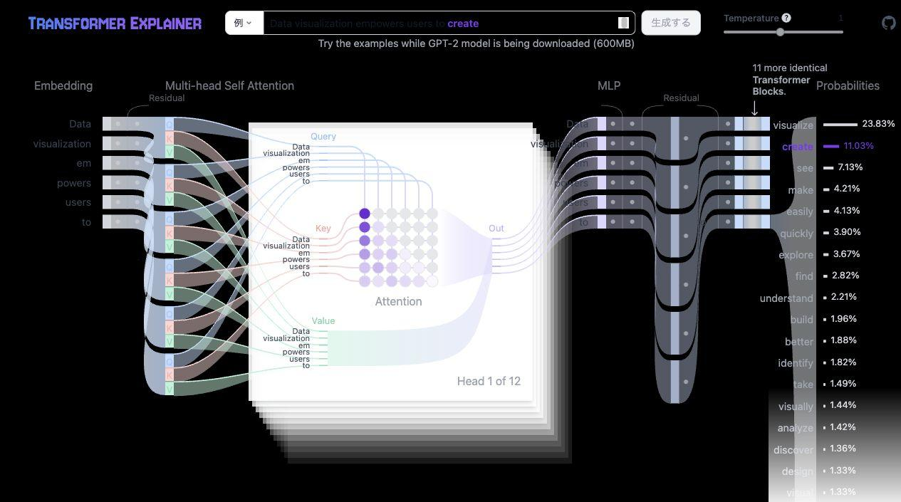
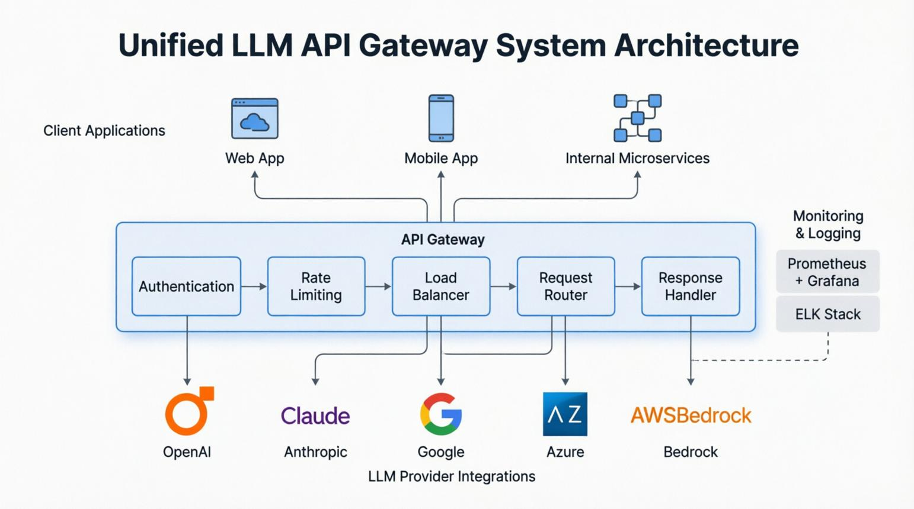
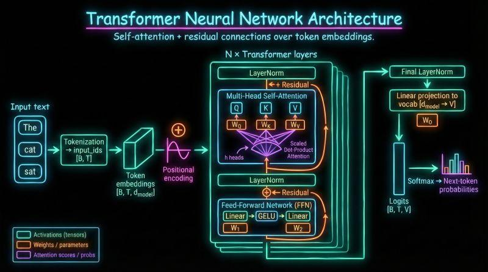
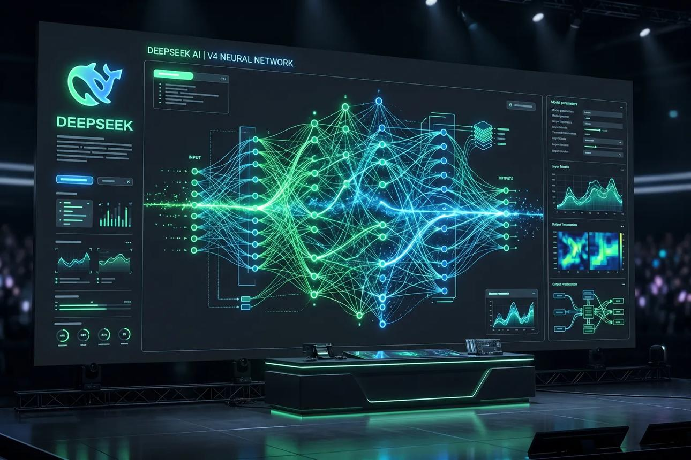
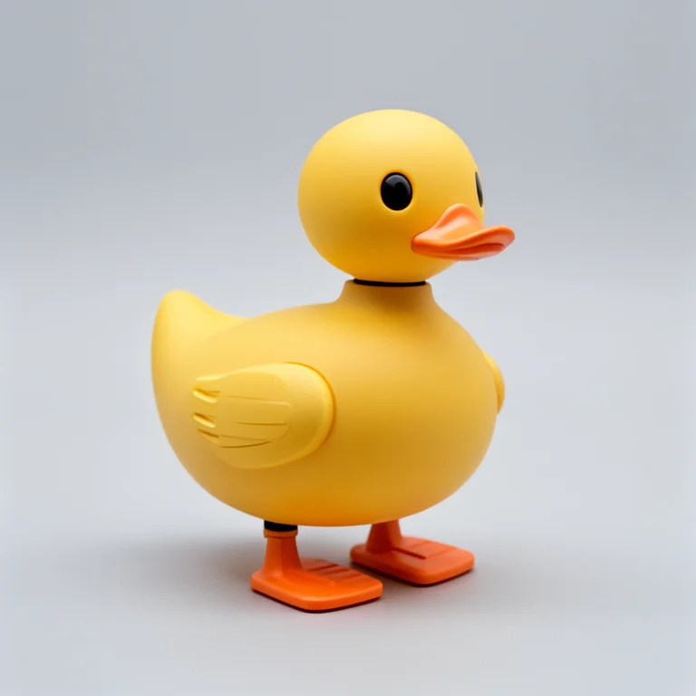

Fengjutian 的博客
关于 AI、开发者工具、知识管理与产品实践的记录
置顶
从这里开始
记录 AI、开发者工具、知识管理与产品实践。
-
技术随笔
TransformerLens：打开大模型的黑盒，用 Hook 和因果干预研究 Transformer 内部
从 Hook 系统、Activation Patching、DLA 到 4.0 的 Driver 架构，系统梳理 TransformerLens 这套机制可解释性工具链能证明什么、不能证明什么。

-
工程实践
Sub2API：把 Claude、OpenAI、Gemini 统一接入，一个开源 AI API 网关的设计与边界
从多账号管理、API Key 分发、账号调度、Token 级计费到协议适配，拆解 Sub2API 这套 Go + Vue 3 的 AI API 网关架构，以及它在合规与稳定性上的真实边界。

-
技术随笔
Train LLM From Scratch：从零开始训练自己的大语言模型
使用原生 PyTorch，从 Tokenizer、Transformer 和预训练出发，逐步理解 SFT、DPO、PPO、GRPO 与大语言模型的完整训练流程。

-
技术随笔
DeepSeek-V4.1-Flash-1017-Uncensored：不重新训练模型，直接修改权重，让 AI 改变回答行为
从闭式权重编辑、MoE 架构、能力评测和部署方式出发，分析如何在不重新训练模型的情况下改变大模型的拒绝行为。

-
技术随笔
Idol：一张图片生成百万级 3D 高斯模型，AI 正在重新定义三维建模
Idol 通过单张图片推断三维结构，最多生成 1,048,576 个 3D Gaussian，为三维资产生成与实时交互提供了新的工作流。

上一页
1
2
下一页